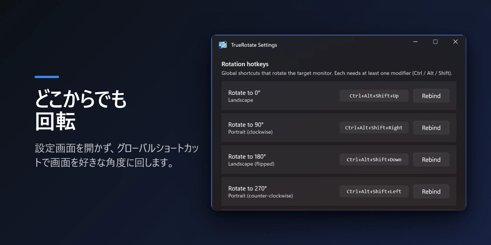
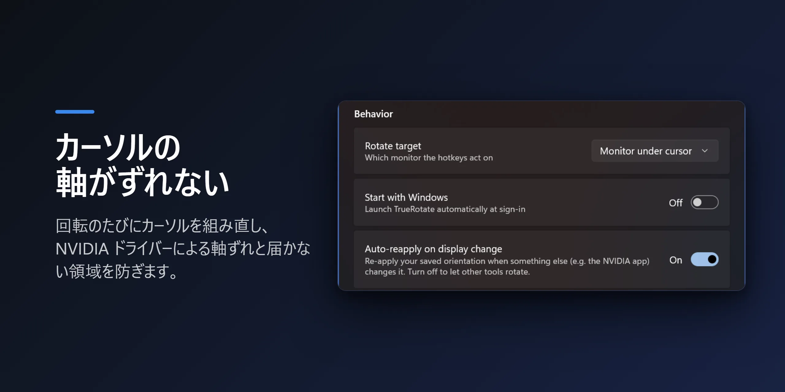
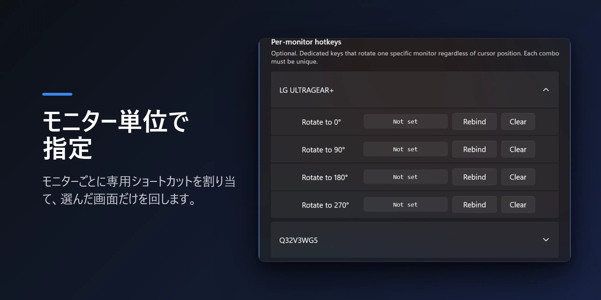

NVIDIAの画面回転バグ
NVIDIA環境でモニターを縦にしたら、マウスが横のまま動きませんか？ カーソルを横に動かすと上下に動いてしまい — ポインタが逆方向に動き、画面の一部はカーソルが届かないデッドゾーンになります。
たいていはNVIDIAアプリやコントロールパネルが表示設定を変更した直後に始まり、再起動しても直りません。よく知られたNVIDIAドライバーのバグで、あなたのせいではありません。
TrueRotateはこう解決します
TrueRotateは回転するたびにWindows CCD（ディスプレイの接続・構成）APIでディスプレイモードを再列挙し、カーソルの座標マッピングを作り直します。誤った軸やデッドゾーンは最初から発生しません。
グローバルショートカットやトレイメニューから、任意のモニターを0°・90°・180°・270°に回転できます。TrueRotateから回転する限り、マルチモニター・マルチGPU環境でもマウスはすべての画面で正常に動きます。
機能
グローバル回転ショートカット
既定はCtrl+Alt+Shift+矢印、自由に再割り当て可能。設定を開かずどこからでも回転 — WindowsやNVIDIAの画面回転ショートカットが効かないときの代替になります。
NVIDIA軸バグの解決
回転のたびにカーソルを再マッピングし、誤った軸やデッドゾーンが再発しません。
モニター別ショートカット
各ディスプレイに、カーソル位置と無関係な専用の回転キーを割り当てられます。
ワンキー循環
ショートカット1つで0 → 90 → 180 → 270を順に切り替え。
自動再適用
NVIDIAパネルなど他のアプリが向きを変えても、保存した向きに戻します。
軽くて静か
Windows起動時に実行、Fluent（WinUI 3）設定、7言語対応。広告・トラッキングなし。
プレビュー



既定のショートカット
| ショートカット | 回転 |
|---|---|
| Ctrl+Alt+Shift+↑ | 0° — 横（ランドスケープ） |
| Ctrl+Alt+Shift+→ | 90° — 縦（ポートレート） |
| Ctrl+Alt+Shift+↓ | 180° — 横（上下反転） |
| Ctrl+Alt+Shift+← | 270° — 縦（反対） |
既定では、カーソルのあるモニターを回転します。すべてのショートカットは設定で変更できます。
よくある質問
NVIDIA以外のGPU（AMD・Intel）でも動作しますか？
はい。回転はWindows標準の方法で動作するため、どのGPUでも使えます。マウス軸がずれる症状は主にNVIDIAで出ますが、TrueRotateはどのGPUでも回転のたびにカーソルを合わせ直します。
回転後にマウスが逆方向に動く問題も直りますか？
はい、それがTrueRotateの核心です。回転のたびにカーソル座標を再マッピングするので、縦モニターでマウスが横のように動いたり、届かないデッドゾーンができる問題がなくなります。
ショートカットの変更やモニターごとの割り当てはできますか？
はい。すべての回転ショートカットは設定で自由に変更でき、モニターごとに専用キーを割り当てられます。
広告やデータ収集はありますか？
ありません。広告もトラッキングもなし。Windows起動時に実行するかどうかも自分で切り替えられます。